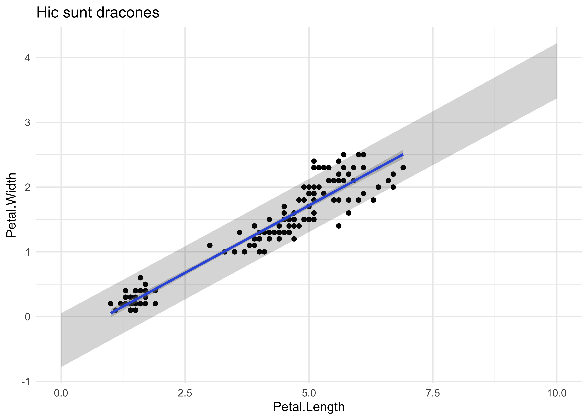
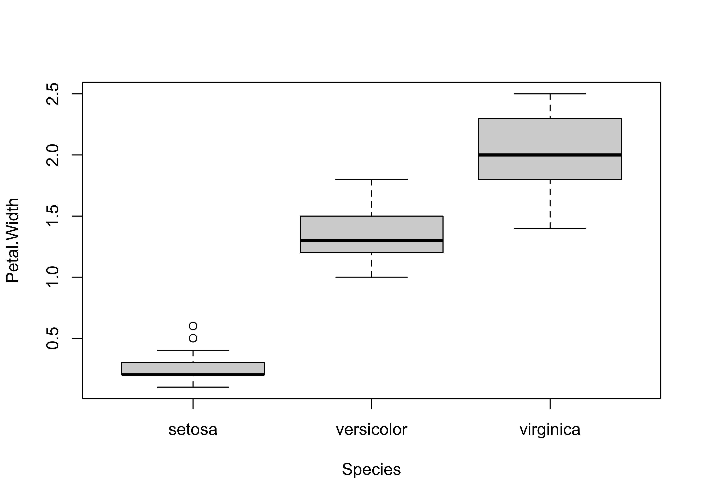

Models 101
linear model
RSS
parameters
loss function
model matrix
model checking
explained variance
Some models are useful
Data & Correlations
Models
Goal: Use some variables in the data to predict others.
Jargon Alert: “predictors” (“independent variables”, “features”, \(X\)) predict “responses” (“dependent variables”, \(Y\)).
Causality Alert: a good, complex, deep or even perfect model does not mean that we found a causal connection \(X \to Y\).
Mathematical Goal
Model expected value \(\hat y_i\) as a (linear) function of \(x_i\)
\[ \begin{array}{ll} y_i &= \hat y_i + \epsilon_i ~~~~~ i = 1 \ldots n \\ \\ \hat y_i &= f(x_i, \theta) = \theta_0 + \theta_1 x_i \\ \\ \epsilon_i &\sim N(0, \sigma^2) \end{array} \]
and in matrix form (also for multiple variables)
\[ Y = X \theta + \epsilon \]
Compact notation is useful:
- jargon: model matrix \(X\)
- extendable to multiple predictor variables \(y_i=f(x_i, z_i, \ldots)\)
- extendable to categorical variables (dummy)
- same intersect (\(\theta_0\)) for all observation
- focus on shapes and rules of matrix multiplication
- for each observation: same parameters, different error terms
Loss functions: Residual Sum of Squares
For \(n\) data points, choose parameter vector \(\theta\) by ordinary least squares:
\[ RSS(\theta) = \sum_{i=1}^{n} (y_i - \hat y_i)^2 = \sum_i \epsilon_i^2 = \epsilon^T \epsilon \to min \]
Code
set.seed(42)
xr <- seq(-3, 3, by=0.1)
# Generate parameter combinations and linear functions over xr
result <- params_func(5, pr=c(-2,2,-2,2,0,0), xr=xr)
# Create xy-plot
plot_xy <- result$func %>%
ggplot(aes(x = x, y = y, color = point)) +
geom_line() +
labs(title = "X-Y Space: Linear Models") +
theme_minimal() +
theme(legend.position = "none")
# Create parameter space plot
plot_param <- result$params %>%
ggplot(aes(x = beta0, y = beta1, color = point)) +
geom_point(size = 2) +
labs(title = "Parameter Space: Models", x = "theta0", y = "theta1") +
xlim(-5, 5) + ylim(-5, 5) +
theme_minimal() +
theme(legend.position = "none")
# generate data from quadratic function with one parameter combination + noise
# for a range of x values in xr
res <- params_func(1, pr=c(1,1,2,2,0.5,0.5), xr=xr)
data <- res$func %>% mutate(yd = y + rnorm( n() ))
# plot data
plot_data <- ggplot(data, aes(x = x, y = yd)) +
geom_point(alpha=0.3) + # data
geom_line(aes(y = y), linetype = "dashed") + # true function
geom_smooth(method='lm', formula='y~x', colour="lightblue") + # best linear fit
labs(title = "X-Y Space: Sampled Data", x="x", y="y") +
theme_minimal()
# calculate Residual Sum of Squares for each combinations (beta0, beta1) in grid
beta0_seq <- seq(-5, 5, length.out = 100)
beta1_seq <- seq(-5, 5, length.out = 100)
grid <- expand_grid(beta0 = beta0_seq, beta1 = beta1_seq) %>%
mutate(RSS = map2_dbl(beta0, beta1, function(b0, b1) {
sum((data$yd - (b0 + b1 * xr))^2)
}))
# Plot RSS + contour
plot_rss <- ggplot(grid, aes(x = beta0, y = beta1, z = RSS)) +
geom_tile(aes(fill = RSS)) + geom_contour(color = "grey") +
scale_fill_gradient(low = "lightblue", high = "red") +
labs(title = "Parameter Space: RSS Contours", x = "theta0", y = "theta1") +
theme_minimal() +
theme(legend.position = "none")
plot_xy + plot_param + plot_data + plot_rss + plot_layout(ncol = 2)
Note
- Each parameter combination corresponds to a specific (linear) model
- Better models have lower RSS (= “cost” = “loss”)
- smallest RSS corresponds to maximal likelihood: \(P(Y|M)\)
- even the “best” model may be wrong
- “all models are wrong, some are useful”
Goal: revisited
The linear regression has minimzed the residual sum of squares \(RSS\). Below I visualize (in red) the remaining residual errors as deviations of the fitted line from the true data. I also compare it to the mean model where no dependency on X=Petal.Length is used.
Code
mu = iris$Petal.Width %>% mean # simplest model
model <- lm(Petal.Width ~ Petal.Length, data=iris) # linear model
p1 <- iris %>%
mutate(mean = mu) %>%
ggplot(aes(x = 0, y = Petal.Width)) +
geom_point() +
geom_hline(yintercept=mu, colour="blue") +
geom_segment(aes(xend = 0, yend = mean), color = "red") +
theme(
axis.title.x = element_blank(),
axis.text.x = element_blank(),
axis.ticks.x = element_blank()) +
ggtitle('Mean Model')
p2 <- iris %>%
mutate(predicted = predict(model, iris),
residuals = residuals(model)
) %>%
ggplot(aes(x = Petal.Length, y = Petal.Width)) +
geom_point() +
geom_line(aes(y=predicted), color="blue") +
geom_segment(aes(xend = Petal.Length, yend = predicted), color = "red") +
ggtitle('Linear Model: Residual Sum of Squares')
p1 + p2 + plot_layout(widths = c(1, 3))Model Fit = Model Train
Mathematical Solution
Matrix Algebra for Expectations
For linear regression, \(f(x,\theta) =X \theta\), there is an explicit formula for the parameters \(\hat \theta\) and \(\hat \sigma\)
\[ \begin{array}{ll} \hat {\theta} &= (X^TX)^{-1} X^T Y\\ \hat {\sigma}^2 &= \epsilon^T \epsilon / (n-p) = RSS /(n-p) \end{array} \]
Statistical Analysis
Remaining sampling fluctuation around \(\hat y\) (measured by \(\hat \sigma\)) also induced uncertainties in the parameter estimate (error propagation)
\[ Cov(\theta) = \hat \sigma (X^TX)^{-1} \]
Given sampling fluctuations, and the corresponding uncertainty in the parameter estimate, we want to quantify our surprise for \(\hat {\theta} \ne 0\) assuming that \(\theta=0\). This can be done by a confidence interval
\[ \hat {\theta} \pm c \cdot \sigma_\theta \] There choice for \(c\) is arbitrary and it corresponds to our desired level of confidence that the “true” parameter \(\theta\) is contained within this interval (\(c=1.96\) is a popular choice).
Often we are interested if the confidence interval contains zero (no dependence). The p-value denotes the probability that zero is outside the region, even if the true value \(\theta=0\)
Practical Solutions
Easy with R: lm()
Code
# fit a linear model
model <- lm(Petal.Width ~ Petal.Length, data=iris)
#model %>% summaryEasy with Python/sklearn: LinearRegression()
Code
from sklearn.datasets import load_iris
from sklearn.linear_model import LinearRegression
from sklearn.metrics import mean_squared_error
import pandas as pd
# 1. Load iris data
iris_data = load_iris(as_frame=True)
X = iris_data.data
# 2. munge and reshape data
x = iris['petal length (cm)'] # predictor
y = iris['petal width (cm)'] # response
x = x.to_numpy().reshape(-1, 1) # shape it as samples x features
# 3. define model
lm = LinearRegression()
# 4. fit / train model
lm.fit(x, y)
# 5. report model & fit parameters
print("R² score:", lm.score(x, y))
print('Fitted Parameters: ', lm.intercept_, lm.coef_)
yp = lm.predict(x) # prediction
MSE= mean_squared_error(y, yp) # evaluate fit
print('Mean Squared Error: ', MSE)Model Evaluations
What is a good model (“good fit”)
- RSS small \(\to\) how small?
- slope \(\theta_1 \ne 0\) (confidence interval, small \(P\)-value)
- good explanation of variance: large coefficient of determination \(R^2\)
- good improvement of explained variance: large F-statistics (small \(P\)-value)
- visualization
\(R^2\) and \(F\)
Total Sum of Squares (Mean-only Model):
\[ TSS = \sum_i(y_i - \bar y)^2 = ||Y - \bar{Y}||^2 \]
Two components of variation: \[ \begin{array}{ll} ||Y - \bar{Y}||^2 &= ||Y-\hat{Y}||^2 + ||\hat{Y} - \bar{Y}||^2 \\ TSS &= RSS + ESS \end{array} \]
Coefficient of Determination: Fraction of variation explained by new model (\(R^2\)):
\[ R^2 = \frac{TSS-RSS}{TSS} = 1 - \frac{RSS}{TSS} = 1 - \frac{\sum_i(y_i - \hat y_i)^2}{\sum_i(y_i-\bar{y})^2} \]
F-statistics \[ F = \frac{(TSS-RSS)/(p-1)}{RSS/(n-p)} \]
Poor Models \(\to\) useless models
Model Predictions
with confidence intervals
Uncertainties in model parameters become uncertainties in prediction:
Notice
We model the expected mean and the confidence interval denotes the “standard deviation” of the mean, not the variability in the data
with prediction intervals
The variation of the data is clearly larger than suggested by the confidence interval shown above.
It is important to recognize that there are two components of variations:
\[ ||Y - \bar{Y}||^2 = ||Y-\hat{Y}||^2 + ||\hat{Y} - \bar{Y}||^2 \]
the variance explained by the linear model: \(||\hat{Y} - \bar{Y}||^2\) where \(\hat{Y} = X \hat \theta\). In this context errors in \(\hat \theta\) will induce errors in Petal.Width.
the unexplained variance \(||Y-\hat{Y}||^2 = ||\epsilon||^2\) that remains unaccounted for, but we assume that \(\epsilon = (Y-\hat{Y}) \propto N(0,\sigma^2)\)
Code
pred <-predict(model, newdata=iris, interval = 'prediction' , level = 0.893)
cbind(iris, pred) %>%
ggplot(aes(x=Petal.Length)) +
geom_point(aes(y = Petal.Width, colour=Species)) +
geom_ribbon(aes(ymin = lwr, ymax = upr), alpha = 0.2) +
geom_line(aes(y = fit)) +
ggtitle('Prediction Interval')
Note
- The prediction interval covers the broader variability of the data.
- But as with the confidence interval, the level can be set at will.
- A common but arbitrary choice is 0.95
Predictions with Linear Algebra
The confidence interval (CI) denotes the range within which we expect the expected means to lie
The prediction interval (PI) also includes the residual variance \(\sigma^2\)
\[ \begin{array}{ll} \hat y & = X\theta = E[Y(X)] = \mbox{expected mean}\\ Cov(\hat \theta) &= \sigma^2 (X^TX)^{-1} \\ Cov(\hat y) &= X \cdot Cov(\hat \theta) \cdot X^T = \sigma^2 X(X^TX)^{-1} X^T \\ SE(\hat y) &= \sqrt{diag(Cov(\hat y))} \\ CI: & \hat{y} \pm ~t_{n-2} \cdot SE(\hat{y}) \\ PI: & \hat{y} \pm ~t_{n-2} \cdot \sqrt{SE(\hat{y}) + \sigma^2} \end{array} \]
Predicting Outside
Regardless of prediction or confidence intervals, be careful when predicting (and interpreting) beyond the data range in which the model was trained/fitted
Code
model <- lm(Petal.Width ~ Petal.Length, data=iris) # just in case we forgot
new_data <- data.frame(Petal.Length = seq(0, 10, 0.1)) # create new data
pred <- predict(model, newdata = new_data, interval = "prediction") # + prediction interval (default)
pred <- pred %>% as.data.frame %>% mutate(Petal.Length=new_data$Petal.Length) # add Petal.Length
ggplot(data=iris, aes(x = Petal.Length)) +
geom_point(aes(y = Petal.Width)) +
geom_smooth(aes(y = Petal.Width), method = "lm", formula = y ~ x) + # CI from geom_smooth
geom_ribbon(data = pred, aes(ymin = lwr, ymax = upr), alpha = 0.2) + # PI from pred
theme_minimal() +
labs(title = "Hic sunt dracones")
Factorial variables as predictors
In the iris example the “Species” variable is a factorial (categorical) variable with 3 levels.
Other typical examples: different experimental conditions or treatments.
Code
plot(Petal.Width ~ Species, data=iris)
Code
# can also be modelled with model matrix X
#model_cat=lm(Petal.Width ~ Species, data=iris)
#summary(model_cat)Each species level (dummy variable X) has their own expected value \(y\).
Requires choice of dummy encoding and reference level.
Model Checking
Linear models \(y_i=\hat y_i + \epsilon_i\) make certain assumptions: \(\epsilon_i \propto N(0,\sigma^2)\)
- residuals \(\epsilon_i\) are independent from each other (non-linear patterns?)
- residuals are normally distributed
- have equal variance \(\sigma^2\) (“homoscedasticity”)
- no outliers (large residuals) or observations with strong influence on fit
Different methods and software for diagnostic plots
Code
fit=lm(Petal.Width ~ ., data=iris)
op=par(no.readonly=TRUE) # safe only resettable graphical parameters, avoids many warnings
par(mfrow=c(2,2)) # change graphical parameters: 2x2 images on device
plot(fit,col=iris$Species) # four plots rather than oneCode
par(op) # reset graphical parametersReview
- dependencies between variables can often be modeled
- find best parameters and loss function (RSS)
- linear models:
- fast analytical and computational solutions
- many evaluation metrics and checking: \(R^2, F, \ldots\)
- may not be appropriate (complex relationships, \(y\) categorical)
- dangers:
- good models not necessarily causal
- extrapolation beyond fit domains
- future
- beyond linear models
- focus on RSS, accuracy (and other loss functions)
- parameters less interesting